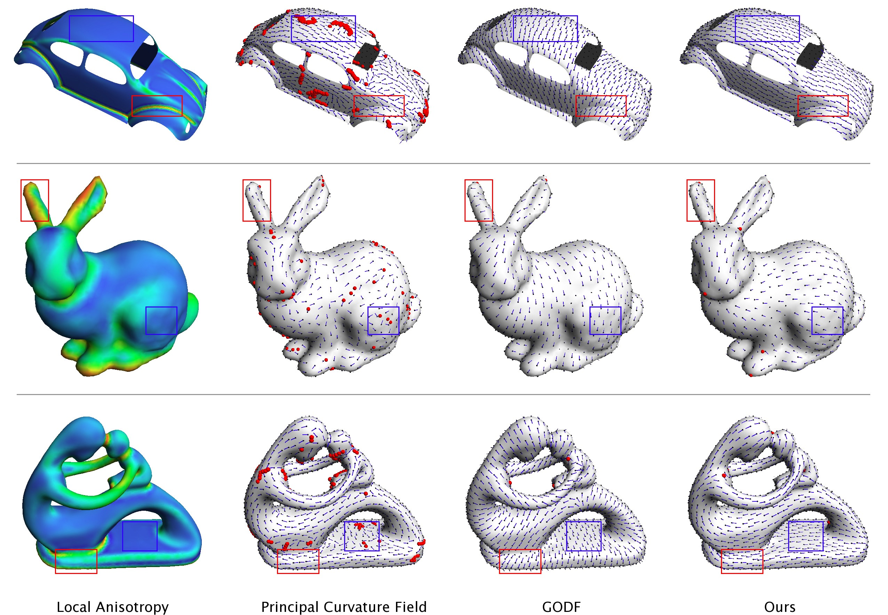

Gallery:
Comparing the principal curvature fields (middle-left), the Global
Optimal Direction Fields (middle-right), and extrinsically smooth
tangent fields (right) on three surfaces (the Beetle has
boundaries).
Abstract
We consider the problem of
finding a unit vector field (i.e., a direction field) over a domain
that balances two competing objectives, smoothness and conformity to
the shape of the domain. Common examples of this problem are finding
normal directions along a curve and tangent directions over a surface.
In a recent work, Jakob et al. observed that minimizing extrinsic
variation of a tangent direction field on a surface achieves both
objectives without the need for parameter-tuning or the use of
additional constraints. Inspired by their empirical observations, we
analyze the relation between extrinsic smoothness, intrinsic
smoothness, and shape conformity in a continuous and general setting.
Our analysis not only explains their observations but also suggest that
an extrinsically smooth normal field along a curve can strike a similar
balance between smoothness and shape-awareness. Our second contribution
is offering extension of, justification for and improvement over the
optimization framework of Jakob et al. In our experiments, we
demonstrate the suitability of extrinsically smooth field in a variety
of applications and compared with existing solutions.